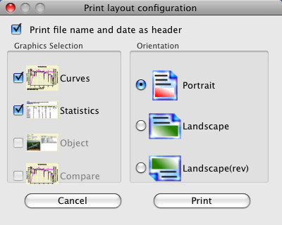
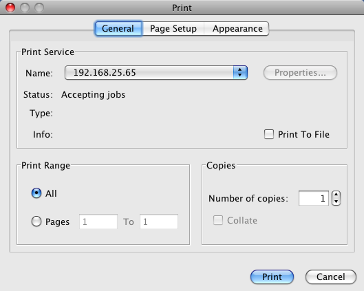

Menu- and Tool- Bar
The menu bar make all elements available to manage the application. The tool bar enable the most often used elements using icons to make it more intuitive.

"File" Menu
From the file menu all action are triggered with a file as base

- "New" initializing the application for the active device, are data available which are not saved this operation must be committed
- "Open" opens a file open dialog to select a file to be loaded. If the file does not fit to the active device the device gets switched while opening. File ending for supported input files can be adjusted as usual for your specific operating system.
- "Save" opens a file save dialog, are the data already saved overwrite commitment or renaming is required
- "Save as..." opens a file save dialog to use a new name to save the data
- "History" showing the list of last used files with a maximum of 10 entries
- "Import" offers the possibility to import comma separated values files (CSV) with absolute or raw data. Please do not mix with CSV data which gets imported with CSV2SerialAdapter or derivates which gets imported as initial device data import. In case of device capability an extra menu would be offered like *.cvs, *.nmea, *.txt or *.bin.
- "Export" offers the possibility to export comma
separated values" (CSV) files as absolute values or raw data to be used as spread sheet.
Some device offers additional data export capability, example KMZ Google Earth files generated from GPS data.

- "Preferences" opens the preferences dialog to configure application properties
- "Print" opens a print configuration dialog to initiate printing
- "Exit" close the application (some temporary created files might be also deleted)
Hint : Absolute during CSV export means the same form as displayed in the table view. Raw means the data are equivalent to the data red from the device. While reading raw data the values are adapted if required according the device properties file, just as the data would be gathered from the device.
All functions of the file menu are available by the tool bar.

As sample the printing dialogs get reached both ways. It is possible to configure the views to be printed, according to availability, and page formating. Using portrait print direction two views will fit to one page.
 
The printer selection dialog is a pure Java dialog due to actual color transformation problems using SWT.